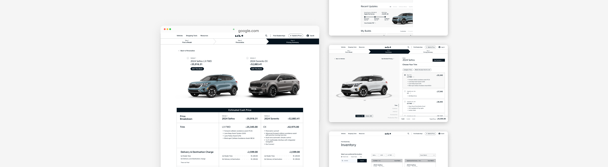
From Click to Key: Reimagining Kia’s Buying Experience
A transparent, confidence-driven car buying journey from online research to dealership.
Explore the final interactive prototype, and client presentation.
BACKGROUND
Kia ranks #1 in vehicle dependability — so why does it feel broken?
Despite building reliable cars, Kia ranked last in dealership satisfaction (J.D. Power, 2022). Pricing inconsistencies between online research and dealer quotes created uncertainty in the purchase journey.
External research revealed a disconnect between Kia’s online and in-person experiences, creating an opportunity to bridge the full buying journey and rebuild buyer confidence.
RESEARCH
Where the journey breaks down
We began by understanding the car-buying landscape through user and competitive research, then audited Kia's platform to identify key friction points.
METHODS
Gathered insights from Kia and competitor buyers on decision drivers, frustrations, and research behaviours.
Analyzed pricing transparency, research tools, and dealership handoff patterns across competitor platforms.
Spoke with a Kia mechanic, Tesla sales rep, and used-car dealer to understand real operational constraints.
KEY INSIGHTS
KIA AUDIT – 3 KEY CUSTOMER PAIN POINTS
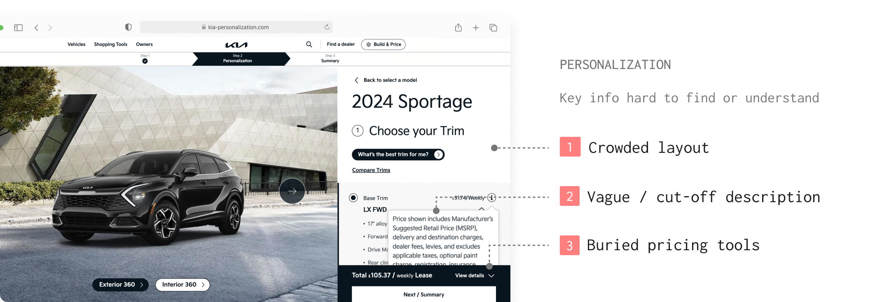
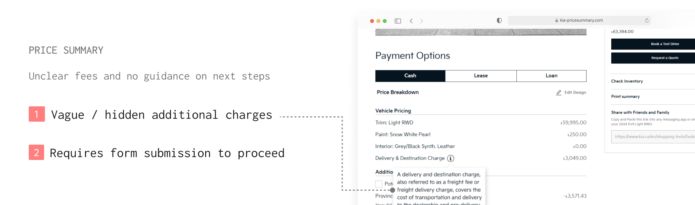
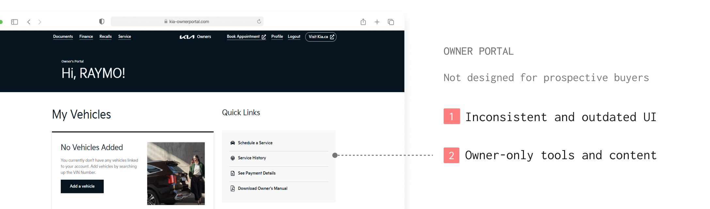
PROBLEM
Clarity and continuity broke down across the buying journey
How might we help buyers feel informed and confident throughout their online-to-dealership journey?
IDEATION
Defining direction within real-world constraints
The challenge wasn't just what to fix, but what was feasible within Kia's independent dealership structure. Through sketching and team voting, we converged on concepts that balanced buyer needs with dealership constraints, narrowing to the directions below:
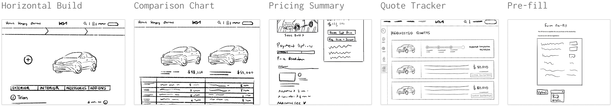
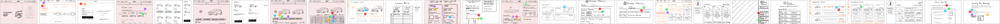
DESIGN & ITERATION
Refining toward clarity, guidance, and confidence
Through two rounds of usability testing, we refined prototypes to strengthen clarity, task flow, and buyer confidence at key decision points.
PART 1: Building Confidence Through Clarity
The build page is the primary exploration touchpoint. We tested two layouts and chose a vertical structure for better scalability, clearer pricing hierarchy, and stronger CTAs.
- Pricing options missing
- Low CTA visibility
- Context scrolled out of view
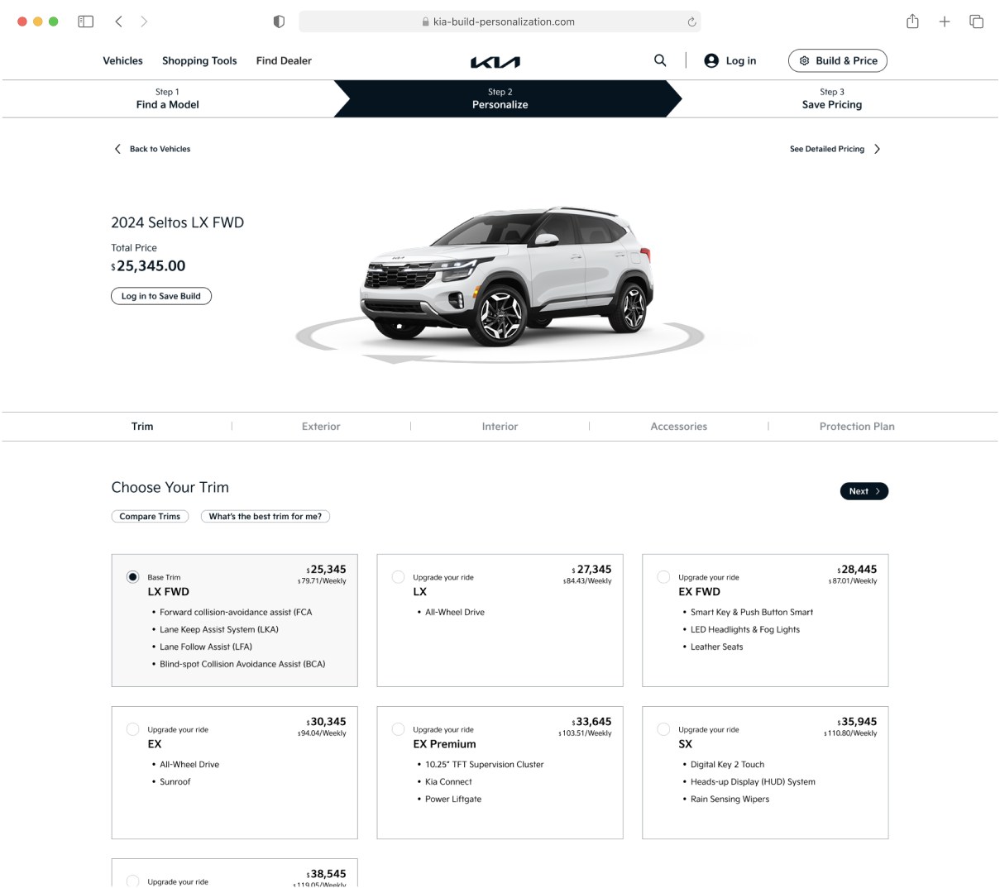
Trim drives the largest price differences in a vehicle build. Using plain language and interactive visuals, we clarified what each trim includes and the value behind its pricing.
- Static dropdown list
- Industry-heavy terminology
- No visual explanation
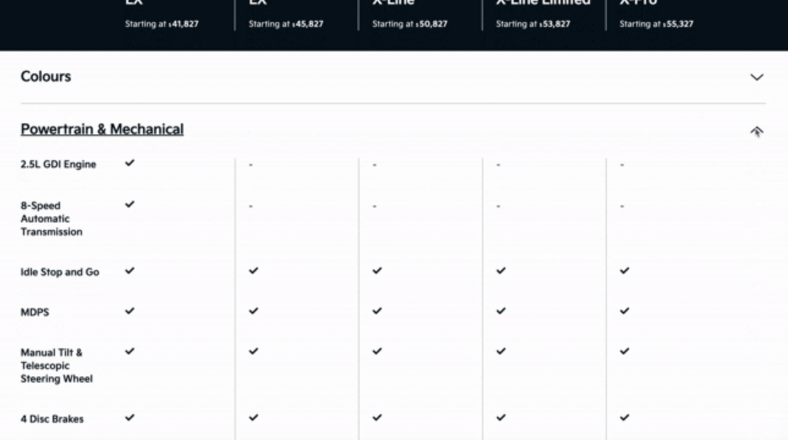
Screenshot of Kia's Trim Chart
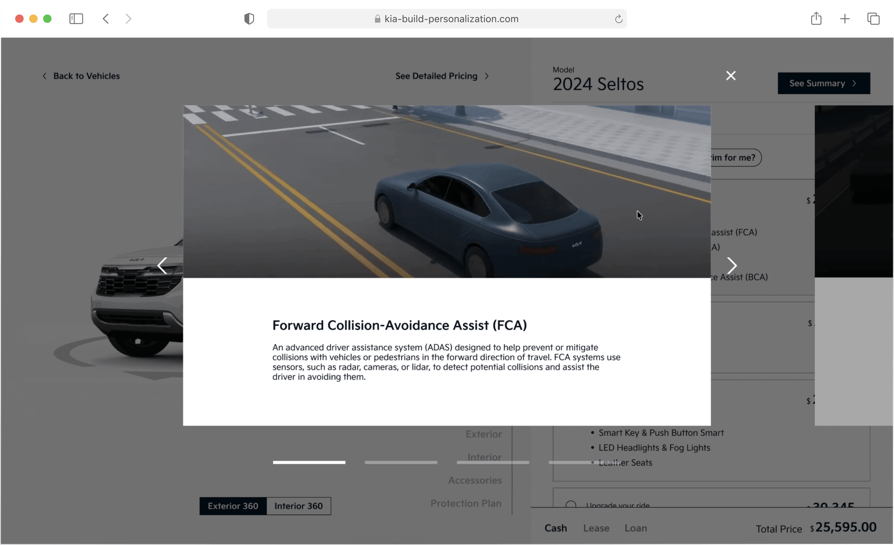
Restructured into clear sections with inline edits and transparent fee breakdowns, surfacing all costs upfront.
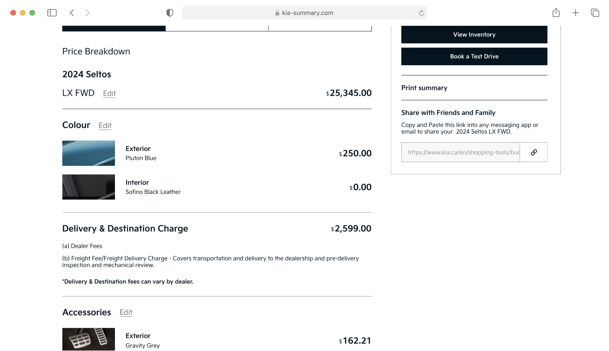
Consolidated personalized build differences into a side-by-side comparison for faster, clearer decisions.
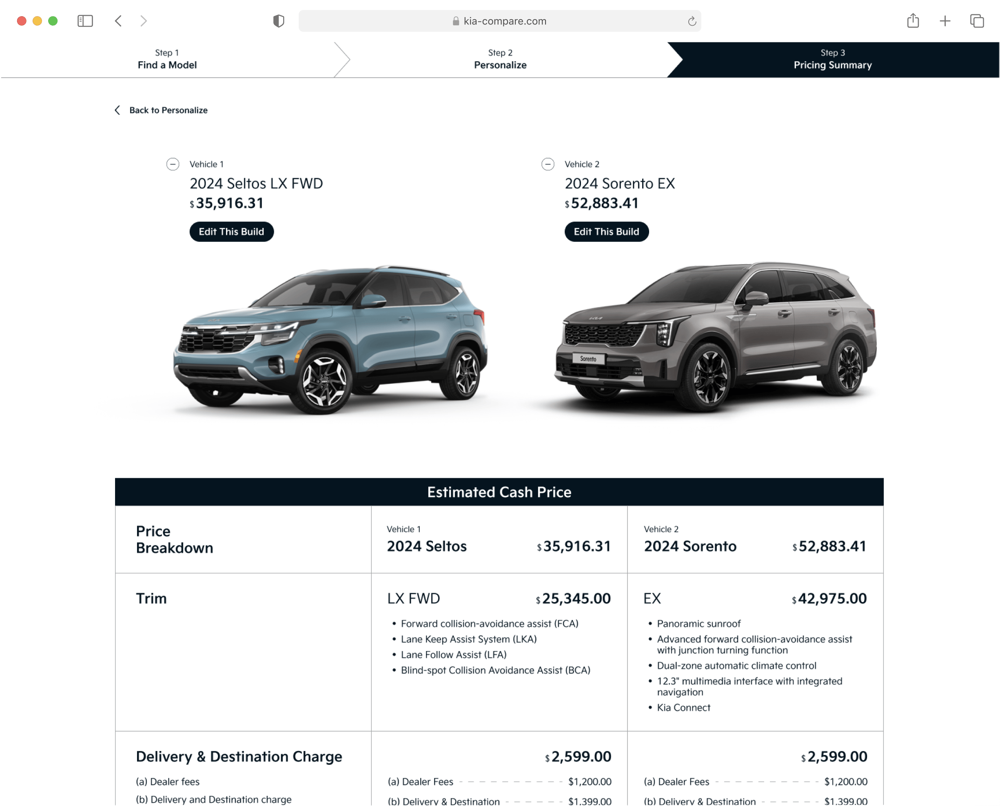
PART 2: From Build to Visit
Extended the post-build journey by integrating the portal into the main experience, enabling saved builds, quote tracking, and booking.
- New features lacked visibility
- Inconsistent UI patterns
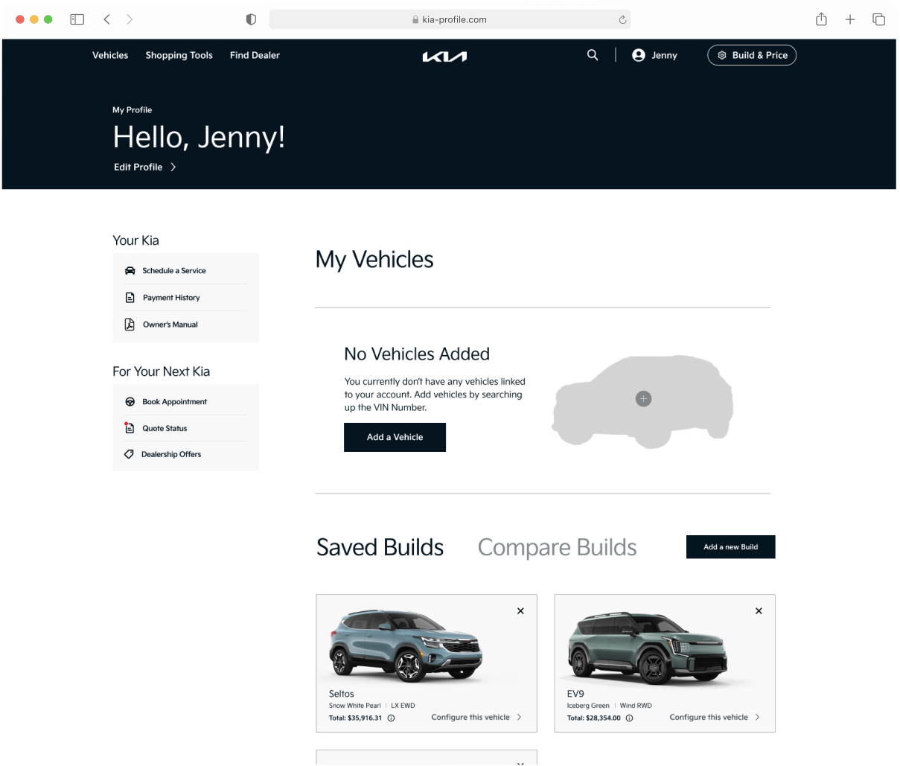
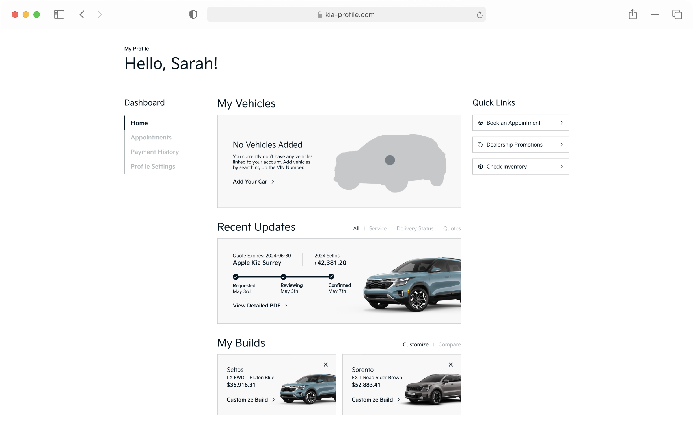
Testing revealed low discoverability on a separate page. We redesigned it as a unified homepage tracker for quotes, deliveries, and services—serving both buyers and owners.
- Low discoverability
- Weak visual hierarchy
- Buyer-only; no owner benefit
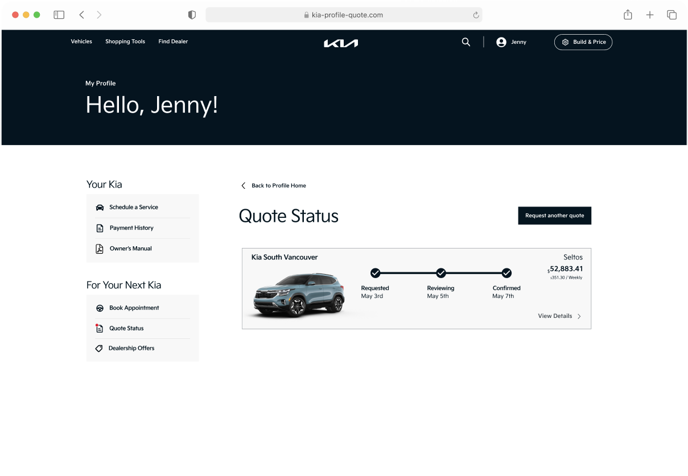
Originally static — motion added post-project for status clarity.
Originally static — motion added post-project for status clarity.
Added appointment booking and document upload to smooth the transition from online research to dealership.
- Upload alone felt incomplete
- No clear confirmation
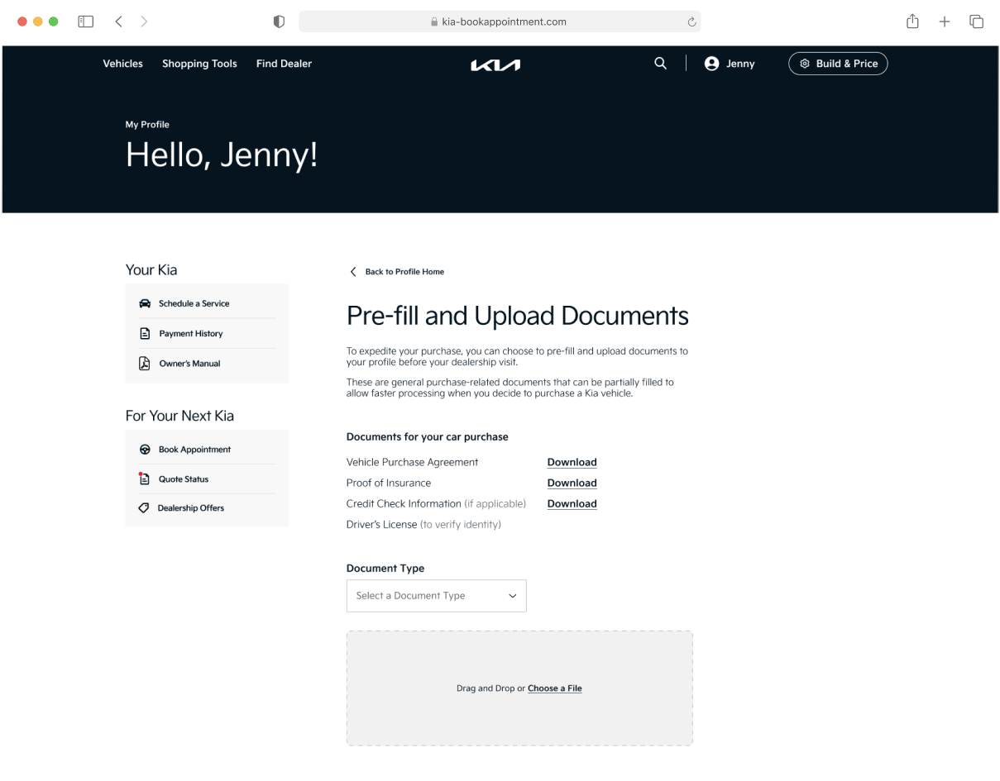
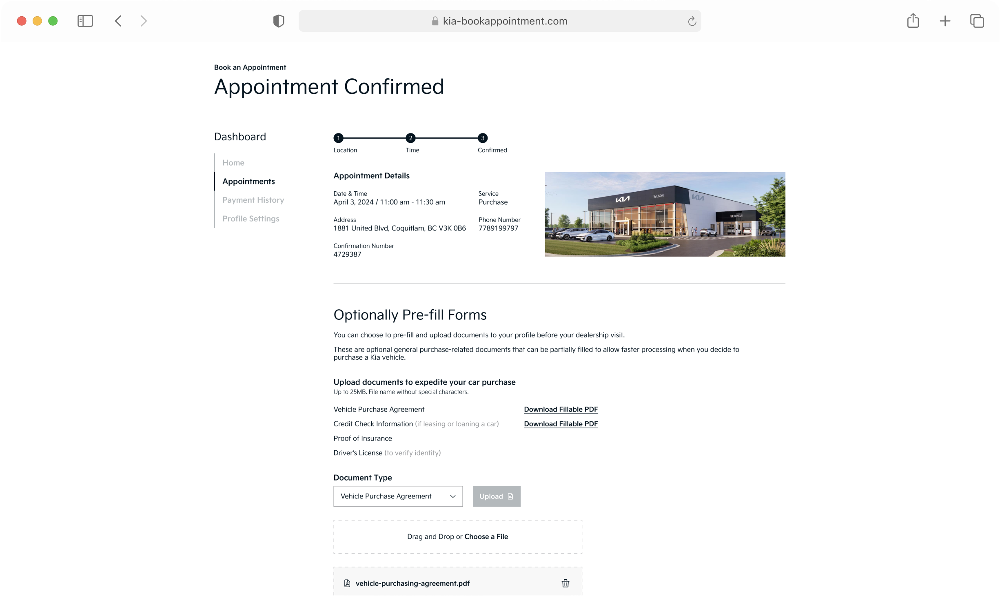
To maintain continuity into the in-store experience, we integrated buyer context (quote details and uploaded documents) into dealer tools, enabling more informed, personalized conversations.
SOLUTION
From broken to a unified, confident car-shopping experience
A continuous journey from online research to dealership visit, replacing uncertainty with clarity, guidance, and confidence.
Explore the final interactive prototype, and client presentation.
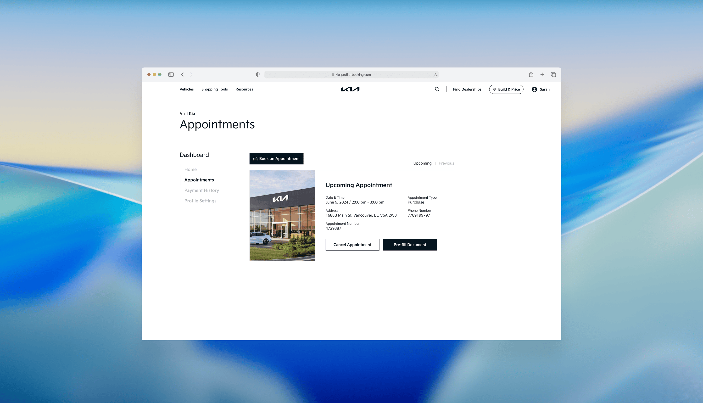
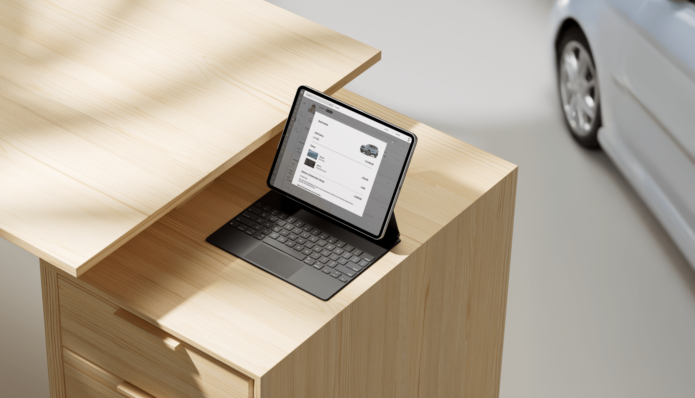
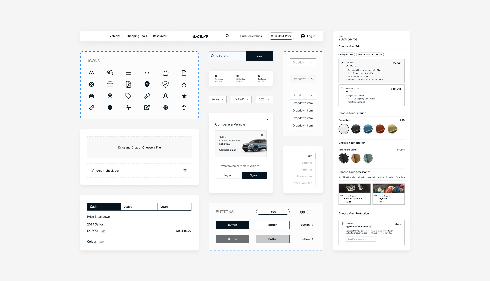
IMPACT
Creating value for the business
Though not launched, this reimagined concept demonstrates potential impact in:
Minimizes pricing gaps by surfacing itemized fees and detailed breakdowns online.
Streamlines handoffs with status tracking and pre-uploads, enabling shorter visits and informed conversations.
Positions Kia as a customer-first brand through a transparent, guided journey.
Maintains consistent brand experiences across dealerships and future digital products.
REFLECTION
Learning to design within constraints, not around them
Entering the automotive domain without prior experience pushed me to ground decisions in research. In high-stakes journeys, I learned design isn’t about efficiency — it’s about certainty. Helping buyers understand what to expect matters more than making things faster.
The real challenge, however, was navigating constraints we couldn’t change. Kia’s dealership structure meant pricing inconsistencies were beyond our control. Rather than pursuing perfect solutions, I focused on identifying the highest-impact opportunities within real-world limits.
This shifted me from optimizing individual screens to designing systems that balance user needs with business goals, and made me realize that I enjoy solving complex, real-world problems where strategy matters as much as visual execution.
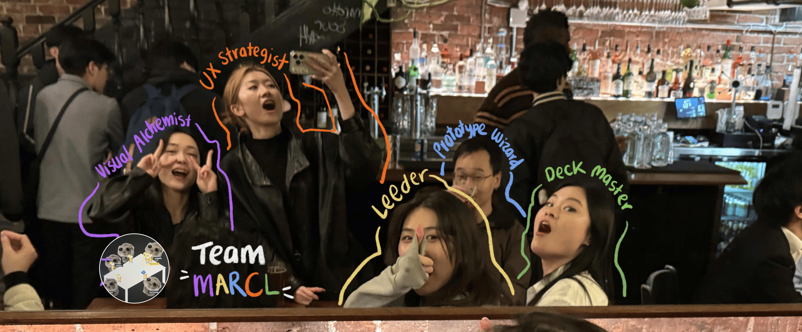
Special thanks to my amazing teammates and teaching staff for an incredibly valuable experience!